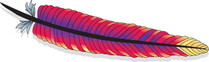

---
# Licensed to the Apache Software Foundation (ASF) under one
# or more contributor license agreements.  See the NOTICE file
# distributed with this work for additional information
# regarding copyright ownership.  The ASF licenses this file
# to you under the Apache License, Version 2.0 (the
# "License"); you may not use this file except in compliance
# with the License.  You may obtain a copy of the License at
#
#   http://www.apache.org/licenses/LICENSE-2.0
#
# Unless required by applicable law or agreed to in writing,
# software distributed under the License is distributed on an
# "AS IS" BASIS, WITHOUT WARRANTIES OR CONDITIONS OF ANY
# KIND, either express or implied.  See the License for the
# specific language governing permissions and limitations
# under the License.

layout: default
---

<div class="container">
<div class="content">
  <div class="hero-unit">
    <div class="pull-right"></div>
    <h1>Apache Logging Services</h1>
    <p>The Apache Logging Services Project creates and maintains open-source software related to the logging of
      application behavior and released at no charge to the public.</p>
  </div>

  <div class="projects">
    {% for project in site.data.projects %}
      {% if project.status == "active" %}
      <div class="project">
        <h2>{{project.name}}</h2>
        <p>{{project.description}}</p>
        <p><a target="_blank" class="btn" href="{{project.url}}">Project site &raquo;</a></p>
      </div>
      {% endif %}
    {% endfor %}
      <div class="project">
        <p><a class="btn" href="dormant.html">See dormant projects &raquo;</a></p>
      </div>
  </div>

  

